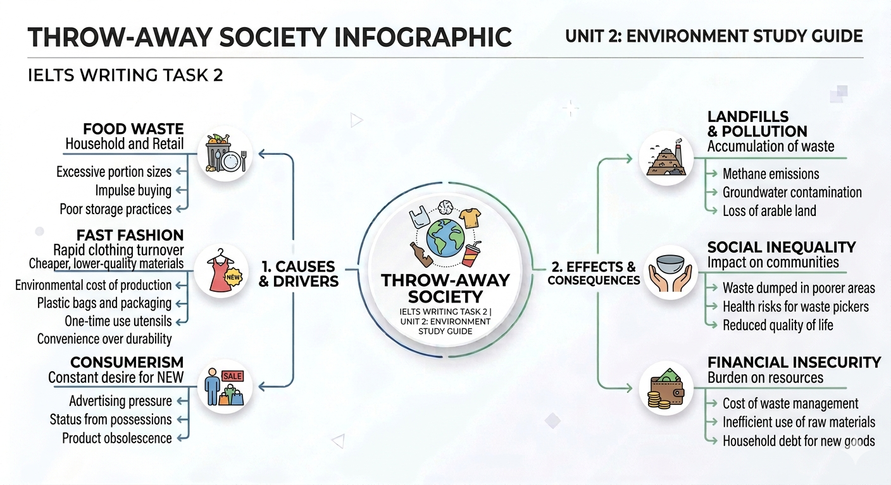

Khám phá hiện tượng "văn hóa vứt bỏ" (Throw-away society) thông qua 4 khía cạnh chủ chốt: Food Waste, Fast Fashion, Disposable Materials, và Consumerism. Đồng thời, phân tích vai trò của Chính phủ trong việc giải quyết các vấn đề môi trường.
Nguyên nhân đến từ Food Fashion (xu hướng ăn uống theo trend) và việc prioritizing appearance (ưu tiên ngoại hình) của thực phẩm tại các cửa hàng.
"Low-quality materials lead to shorter lifespan and provoke a cycle of overconsumption."
Sự bùng nổ của nhựa dùng một lần đến từ ba yếu tố chính:
| Yếu tố (Factor) | Lý do chi tiết (Details) |
|---|---|
| Convenience | Quick and easy use without the need for cleaning. |
| Hygiene | Sanitary, prevents the spread of germs and diseases. |
| Cost-effective | Low resources needed for mass production. |
Persuasive advertising techniques: Các kỹ thuật quảng cáo thuyết phục tạo ảo tưởng về hạnh phúc qua vật chất.
Social norms: Tiêu chuẩn xã hội buộc mọi người phải "keep up with friends" (theo kịp bạn bè).
Status and identity: Sử dụng tài sản vật chất để khẳng định địa vị cá nhân.
Khi đề cập đến giải pháp của Chính phủ, hãy luôn kết hợp giữa Luật pháp (Laws) và Nhận thức (Awareness). Một bài viết điểm cao (Band 7.5+) luôn cho thấy sự kết hợp giữa các hình phạt nghiêm khắc (strict penalties) và các chiến dịch giáo dục cộng đồng (media campaigns/educational programs).
Chọn từ phù hợp để điền vào chỗ trống: